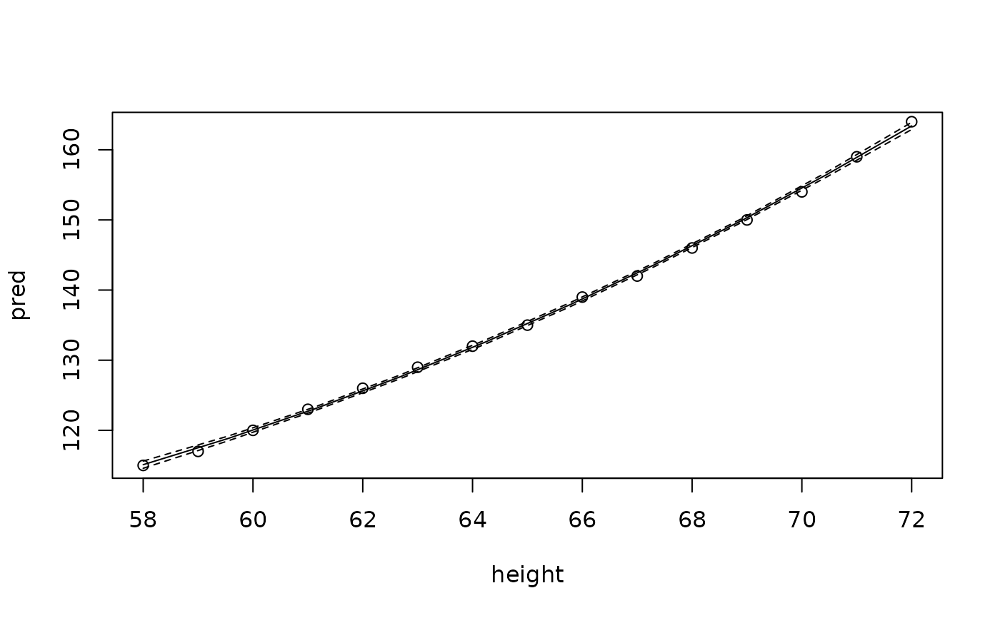
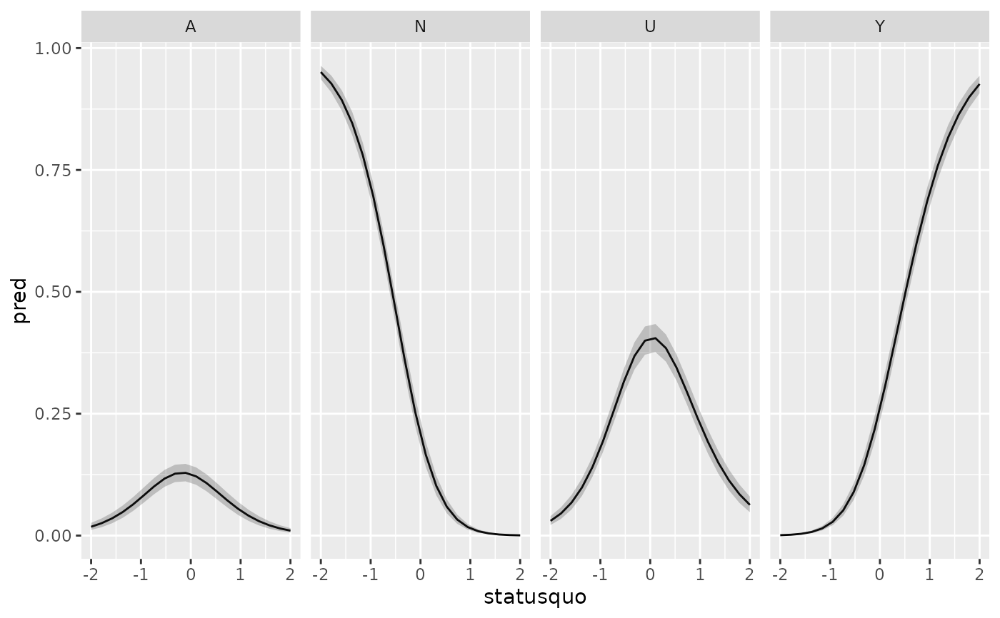

predmarg.RdGeneric function to preduce predictive margins
predmarg(
obj,
settings,
data,
subset,
type = NULL,
groups = NULL,
setup = NULL,
cifunc = get_cifunc(obj),
level = 0.95,
parallel = FALSE,
n = 21,
trim = 0,
mc.cores = if (.Platform$OS.type == "windows") 1L else max.cores,
...
)a model object, e.g. returned by lm, glm, etc.
an optional data frame of settings for independent variables or a formula with variables for which settings are to be generated.
an optional data frame for which the predictive margins are computed. If ommited, an attempt is made to obtain the data from the model object.
an optional logical vector that defines a subset for which a predictive margin is computed
an optional character string that specifies the type of predictions, e.g. probabilities or cumulative probabilites. For future versions only.
a variable that defines groups for which predictive margines are computed. This variable has to have the same number of observations as the data to which the model was fitted.
an optional expression that is evaluated for each setting, i.e. individually for each row of the settings data frame. Can be used to modify independent variables.
a function to compute prediction intervals. By default it is the chosen by the function of the same name.
level of confidence intervals of predictions.
logical value that determines whether predictions for individual settings are computed in parallel. (Does not yet work on windows.)
an integer number, the number of values generated for
an independent variable if settings is a formula.
The values form an equally spaced grid that cover the range from
the variable in data.
a number between 0 and 1. The proportion of
extreme values of variable in data that should be
trimed from the range of a generated set of values of
an independent variable.
number of CPU cores used for parallel processing.
optional vectors of values of independent variabls. These
further arguments, if present, are used to create a data frame of
settings, using expand.grid.
a data frame with the following variables:
the mean prediction for the setting of the independent variables
the (estimated) variance of the mean prediction
the standard error of prediction, i.e. the square root of the variance of the mean prediction
lower prediction interval computed with qfunc
upper prediction interval computed with qfunc
the independent variables for which values are set to create the predictions are also included in the resulting data frame.
The generic function predmarg computes predictive
margins for various settings of the independent variables. It is also
possible to provide settings for independent variables that are
included in the model, but that are used in the setup
expression to transform independent variables. See the examples below.
library(magrittr)
# Simple linear regression
fm <- lm(weight ~ poly(height, 2), data = women)
pm <-predmarg(fm,
height=seq(from=58,to=72,
length=10))
str(pm)
#> 'data.frame': 10 obs. of 6 variables:
#> $ pred : num 115 119 123 128 133 ...
#> $ var.pred: num 0.0685 0.0298 0.0182 0.019 0.0218 ...
#> $ se.pred : num 0.262 0.173 0.135 0.138 0.148 ...
#> $ lower : num 115 119 123 127 132 ...
#> $ upper : num 116 119 123 128 133 ...
#> $ height : num 58 59.6 61.1 62.7 64.2 ...
plot(pred~height,data=pm,
type="l")
with(women, points(height,weight))
with(pm, lines(height,lower,lty=2))
with(pm, lines(height,upper,lty=2))

# Logistic regression
library(carData)
Chile %<>% within({
vote2 <- factor(vote,levels=c("N","Y"))
vote2 <- as.integer(vote2=="Y")
})
glm.Chile.1 <- glm(vote2~sex+age+income+education,
data=Chile,
family=binomial)
summary(glm.Chile.1)
#>
#> Call:
#> glm(formula = vote2 ~ sex + age + income + education, family = binomial,
#> data = Chile)
#>
#> Coefficients:
#> Estimate Std. Error z value Pr(>|z|)
#> (Intercept) 1.053e-01 1.786e-01 0.589 0.555615
#> sexM -5.415e-01 1.009e-01 -5.365 8.10e-08 ***
#> age 1.203e-02 3.594e-03 3.347 0.000817 ***
#> income 4.481e-06 1.342e-06 3.339 0.000840 ***
#> educationPS -1.125e+00 1.656e-01 -6.791 1.12e-11 ***
#> educationS -6.369e-01 1.207e-01 -5.276 1.32e-07 ***
#> ---
#> Signif. codes: 0 ‘***’ 0.001 ‘**’ 0.01 ‘*’ 0.05 ‘.’ 0.1 ‘ ’ 1
#>
#> (Dispersion parameter for binomial family taken to be 1)
#>
#> Null deviance: 2361.7 on 1703 degrees of freedom
#> Residual deviance: 2239.0 on 1698 degrees of freedom
#> (996 observations deleted due to missingness)
#> AIC: 2251
#>
#> Number of Fisher Scoring iterations: 4
#>
pm.Chile.1.income <- predmarg(glm.Chile.1,
income=seq(from=2500,to=200000,length=20))
plot(pred~income,data=pm.Chile.1.income,
type="l")
# Baseline category logit
library(mclogit)
#> Loading required package: Matrix
library(MASS)
mb.Chile <- mblogit(vote~statusquo,
data=Chile)
#>
#> Iteration 1 - deviance = 4528.43 - criterion = 0.22885
#> Iteration 2 - deviance = 4394.717 - criterion = 0.03042507
#> Iteration 3 - deviance = 4383.817 - criterion = 0.002486294
#> Iteration 4 - deviance = 4383.674 - criterion = 3.271481e-05
#> Iteration 5 - deviance = 4383.674 - criterion = 7.802726e-09
#> converged
pm.mb.Chile <- predmarg(mb.Chile,
statusquo=seq(from=-2,to=2,length=20))
str(pm.mb.Chile)
#> 'data.frame': 80 obs. of 8 variables:
#> $ pred : num 0.018123 0.950795 0.030231 0.000851 0.025456 ...
#> $ var.pred : num 1.38e-05 4.92e-05 2.21e-05 4.66e-08 2.10e-05 ...
#> $ se.pred : num 0.003713 0.007016 0.004698 0.000216 0.004578 ...
#> $ lower : num 0.011579 0.93617 0.021711 0.000482 0.017267 ...
#> $ upper : num 0.02608 0.96362 0.04009 0.00132 0.03516 ...
#> $ eqnum : int 1 2 3 4 1 2 3 4 1 2 ...
#> $ statusquo: num -2 -2 -2 -2 -1.79 ...
#> $ response : Factor w/ 4 levels "A","N","U","Y": 1 2 3 4 1 2 3 4 1 2 ...
library(ggplot2)
(ggplot(pm.mb.Chile,
aes(x=statusquo,
y=pred,
fill=response
)
) + geom_area())
(ggplot(pm.mb.Chile,
aes(x=statusquo,
y=pred,
ymin=lower,
ymax=upper
)
) + geom_line() +geom_ribbon(alpha=.25) + facet_grid(~response))

mb.hs <- mblogit(Sat~Infl+Type+Cont,weights=Freq,
data=housing)
#>
#> Iteration 1 - deviance = 3493.764 - criterion = 0.9614469
#> Iteration 2 - deviance = 3470.111 - criterion = 0.00681597
#> Iteration 3 - deviance = 3470.084 - criterion = 7.82437e-06
#> Iteration 4 - deviance = 3470.084 - criterion = 7.469596e-11
#> converged
pm.mb.hs <- predmarg(mb.hs,
Infl=levels(Infl),
Type=levels(Type))
dodge <- position_dodge(width=.8)
(ggplot(pm.mb.hs)
+facet_wrap(~Type)
+geom_bar(
aes(fill=response,
x=Infl,
y=pred),
stat='identity',position=dodge,width=.8)
+geom_errorbar(
aes(x=Infl,
ymin=lower,
ymax=upper,group=response),
position=dodge,width=.4))
# The following requires the most current 'mclogit' version on GitHub
# and fails with the CRAN version
# # Baseline category logit with random effects
#
# # Some artificial data
# exadata <- local({
# B <- cbind(c(-.5,.3),
# c(.5,-.5))
# set.seed(42)
# x <- rnorm(n=60)
# X <- cbind(1,x)
# Eta <- X %*% B
# j <- rep(1:10,6)
# jf <- as.factor(j)
# u1 <- rnorm(n=10,sd=.8)
# u2 <- rnorm(n=10,sd=.8)
# Eta <- Eta + cbind(u1[j],x*u2[j])
# expEta <- cbind(1,exp(Eta))
# sum.expEta <- rowSums(expEta)
# pi <- expEta/sum.expEta
# Y <- t(apply(pi,1,rmultinom,n=1,size=300))
# res <-data.frame(Y,x,j,jf)
# names(res)[1:3] <- paste0("y",1:3)
# res
# })
#
# # Baseline logit model with random intercepts and random slopes
# mbrsl <- mblogit(cbind(y1,y2,y3)~x,data=exadata,
# random = ~1+x|j)
# summary(mbrsl)
#
# # Predictive margins for values of x
# pm.mbrsl <- predmarg(mbrsl,x=seq(from=min(x),to=max(x),length=24))
# (ggplot(pm.mbrsl,
# aes(x=x,
# y=pred,
# fill=response
# )
# ) + geom_area())
#
# # Predictive margins for the random effects
# pm.mbrsl.j <- predmarg(mbrsl,j=1:10)
# (ggplot(pm.mbrsl.j,
# aes(x=j,
# y=pred,
# fill=response
# )
# ) + geom_bar(position="fill",stat="identity"))
#
# pm.mbrsl.jx <- predmarg(mbrsl,
# j=1:10,
# x=seq(from=min(x),to=max(x),
# length=24))
#
# (ggplot(pm.mbrsl.jx,
# aes(x=x,
# y=pred,
# fill=response
# )
# ) + geom_area()
# + facet_wrap(~j))